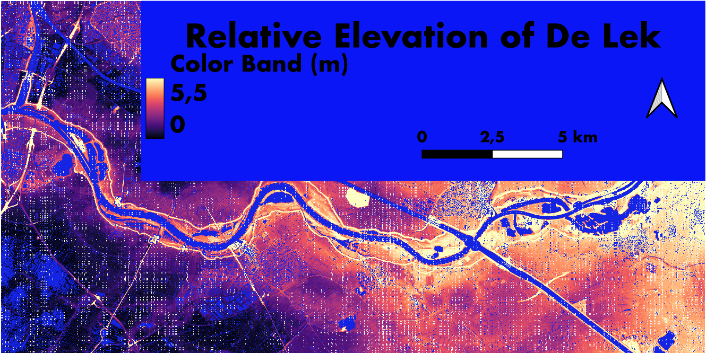

Relative Elevation Model
The map above is a Relative Elevation Model looking at the elevation differences of the surroundings of the De Lek river in Utrecht, Netherlands. All the analysis, symbology edits and the construction of the map were made using QGIS.
In starting the process of relative modelling, I first created a layer in which I drew vectors to create the cross section of the river. While then estimating the different altitudes of the river for which the visible differences were slight or negligeable. I interpolated the data set from the cross section to a new more precise layer. To finally get all of the data accurately representing the elevation difference relative to the riverbed. Finally, raster calculations were run with the size of the pixels. This final step gave a clear more vivid display. From this layer which was saved as a GeoTIF I had to recolor and stretch the elevation to my liking. Finally, the map was ready for printing. An error Occurred in the final REM calculations which I could not troubleshoot which has led to the white pixels on my map.
I picked this color scheme because I found that the elevation being lighter in comparison to most of the map which had low dark elevation sparked a strong contrast. I then made the water Blue so that it would be clear where it lay. I used a stretch of an elevation range of 5.5, a number I came to after playing around with different points to see which were the ones which really demonstrated the change in elevation the most. I checked what the minimum and maximum elevations first.